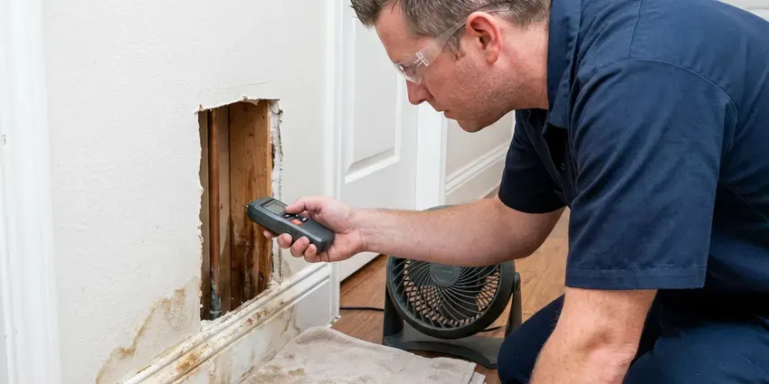

Clogged Drain Repair in Rockville, MD
Water coming up in the shower when the washer drains means a clog downstream. We find it and clear it in Rockville, MD.
- Licensed Plumbers
- Camera Checks on Recurring Clogs
- Clearing Guarantee
- Evening and Weekend Service

Same Drain Clogging Again in Rockville, MD?
Our vans carry cables, augers and a small jetter for every size of drain.
Clogged Drain Repair That Finds the Cause in Rockville, MD
A gurgling toilet when the tub drains is a clue. Odors tell us something too. BVL Plumbing asks what you have noticed and which fixtures are slow, since the pattern of slow drains tells us where the blockage sits, and we can clear it on the first try.
Work we handle every week:
- Descaling ABS and cast iron drain lines
- Tub and shower drain clearing without fixture damage
- Laundry standpipe and branch line clearing

Additional Plumbing Maintenance Services in Rockville, MD
Our maintenance and specialty plumbing services in Rockville, MD catch small problems before they become emergencies.


Customers
Why Choose BVL Plumbing for Clogged Drain Repair in Rockville, MD?
We clear drains in Maryland homes of every age, from cast iron under a slab to new ABS. Old pipe needs care. A cable that is fine for PVC can chew up a rusted cast iron line, so our techs pick the cutter head and the speed based on what the pipe is made of.
- No Chemicals, Clogs get cleared mechanically, with no caustic products poured in.
- Right Cable, We match the cable size and cutter head to the drain size and pipe type.
- Camera When Needed, Recurring clogs get a camera inspection so you see the cause.
Citywide Coverage
Our crews cover Rockville, MD and the towns around it. Same vans, same gear. From the center of town out to the edge, a drain tech can usually reach you the same day with the full set of cables and a jetter.
Experienced Team
Our technicians clear hundreds of drains a year. The cable tells them a lot. An experienced tech can tell grease from hair from roots by how the cable bites, which helps them pick the right head or switch to a jetter before wasting time on the wrong approach.
Safety-First Approach
Any trap or fitting we take apart gets put back to code. Proper slope keeps it draining. We reassemble with new washers when needed, check for drips under the sink and test the drain with running water before we call it done.
Trusted Certified Rockville Plumbing Services Professionals
At BVL Plumbing, we take pride in licensed, certified plumbing services throughout Rockville, MD. Those papers on the wall mean something. Every repair, install and maintenance visit follows strict safety and quality rules, and the plumbers doing the work carry recognized industry credentials.
Call Us Now PHCC Plumbing Contractor Recognition
PHCC Plumbing Contractor Recognition Better Business Bureau (BBB) Accreditation
Better Business Bureau (BBB) Accreditation Angi Certified Pro
Angi Certified Pro ISO 9001 Quality Management Certification
ISO 9001 Quality Management CertificationDrain Clearing for Every Room in Rockville, MD
Bathroom Drain Clog Clearing in Rockville, MD
Hair, soap scum and toothpaste bind together into a mat that sits on the pop-up stopper. That is where most bath sink clogs start. We pull the stopper and clean it, then clear the trap and cable the drain arm if the flow has not come back. A drain screen helps a lot.

Kitchen Sink Clog Repair in Rockville
Kitchen sinks clog from grease that cools and hardens on the pipe wall. Then food scraps and soap pile on. We pull the trap, send a cable through the wall line all the way to the stack, and check the disposal for a jam or worn impeller. A heavy grease line may need a quick jet afterward.
Toilet Clog Repair in Rockville
A toilet clog usually sits in the trapway, the S-shaped channel inside the bowl. Plungers often miss it. We use a closet auger with a rubber sleeve, which reaches through the trapway and pulls out the blockage without scratching the porcelain. We pull out a lot of wipes. If the auger finds nothing, the clog is past the toilet and we check the main.
Commercial Clogged Drain Repair in Rockville
Commercial drains take more abuse than any home drain. Kitchens are hardest on them. BVL Plumbing clears grease-heavy kitchen lines, and handles floor sinks and restroom drains in offices and shops around Rockville, often before opening or after close so customers never notice. Scheduled jetting keeps lines open between visits.
Bathroom Sink & Shower Clog Repair in Rockville, MD
Shower drains slow down a little each week as hair collects on the crossbars. One day the water just sits. We pull the strainer, hook the hair out with a drum auger made for small drains and run the cable through the trap to clear what has moved further down. A hair catcher costs a few dollars.
Tub and Shower Drain Clogs in Rockville
Slow tubs are almost always hair and soap scum. Every so often it is a lost bottle cap. We remove the strainer or overflow plate, clear it with a small drum auger and then work on the trap if needed. We take care not to scratch acrylic, fiberglass or porcelain.
Garbage Disposal and Kitchen Line Clogs in Rockville
A disposal grinds food but does not make it disappear. The ground food still has to travel. Potato peels, rice, pasta and coffee grounds turn to paste and settle in the horizontal run behind the cabinet, so we clear the disposal outlet, the trap and the wall line together because a clog in one usually means buildup in all three. Jammed impellers get freed.

Emergency Drain Clog Service in Rockville, MD
Some backups cannot wait for Monday. Sewage on the floor is one. BVL Plumbing answers after hours in Rockville, MD and sends a tech with full drain equipment, so the clog gets cleared on the first visit instead of patched until a second truck arrives. Turn the toilet supply valve off while you wait.
Clogged Drain Repair Near Me in Rockville, MD
Close by matters on a drain call. Backups do not wait. BVL Plumbing runs vans across Rockville, MD loaded with drum machines, cables and a jetter, so one visit is usually enough.
Being local means we come back. Repeat clogs get the same tech. If a drain we cleared clogs again within the guarantee period, we return at no charge or put the cost toward a camera inspection or repair.
BVL Plumbing at a Glance
- Fully licensed plumbing team covering Rockville, MD
- Same-day appointments and 24/7 emergency response
- Upfront, flat-rate pricing before work begins
- 4.8-star rated by 542+ Maryland customers
Rockville Map
Rockville Information
- Population
- 67,297
- Area codes
- 301/240/202
- Service area
- Rockville and towns within a 40 mile drive
- Nearby
- North Bethesda, Aspen Hill, Gaithersburg, Potomac
Homes built after the war usually have copper supply lines, while newer construction relies on PEX and plastic drain piping. Older drain lines in Rockville pick up scale and the occasional root, so a plunger only moves the clog a few feet.
Expert Services
Call BVL Plumbing for reliable plumbing work done by licensed pros in Rockville, MD.
Our Specialized Plumbing Services in Rockville, MD
At BVL Plumbing, we handle the full list of plumbing services across Rockville, MD. We go from leak detection all the way to full system installations, for homes and commercial buildings, and we do it quickly at a fair price. Explore our core services below:


How a Drain Visit Goes in Rockville, MD
Most clogs take under two hours. This is how it goes.
Book a Visit
Call (443) 719-1650 and pick a time that works. Same-day slots are often open.
Look and Diagnose
The plumber checks the fixtures, looks at the pattern of slow drains and decides where to go in.
Clear the Line
We cable or jet the drain all the way to the main so the clog does not come right back.
Frequently Asked Questions About Clogged Drain Repair in Rockville
A standard clog in one fixture usually runs $150 to $500. Access changes the price. Main line clogs that need a camera inspection or hydro jetting can run $400 to $1,000 or more, depending on how long the line is and how much buildup we find. You get a clear price after we look at it.
Call once the plunger has failed. More effort rarely helps. Other signs it is time are more than one drain backing up, backups in odd places and clogs that keep coming back. Those usually point past the trap.
Hydro jetting sends water at very high pressure through a nozzle that scrubs the pipe wall. It cleans, not just opens. We use it on lines with heavy grease, scale or roots that a cable cannot fully remove. We check pipe condition first.
Sometimes, yes. A plunger works on many clogs. A hand-held hair snake can clear a lot of tub and sink clogs, but if the clog returns, affects more than one fixture or ignores the plunger, call a plumber before forcing anything. Forcing a cable can crack old pipe.
Not if you can avoid it. They are hard on pipes. Caustic products can corrode older pipes and soften plastic fittings, and a failed treatment leaves a trap full of chemicals. A cable is safer and works better.
Our vans carry machines from RIDGID, Spartan Tool and Gorlitz. They have been around for decades. We pick the machine by pipe size, so a small drum unit handles bath sinks while a sectional machine or a jetter handles laundry and main lines. Cameras are high-resolution push units.
Most single fixture clogs take 30 to 90 minutes. Some take longer. Lines with heavy buildup, limited access or old chemicals in the trap slow things down. We tell you if it will run long.
Most sink and tub clogs take one to two hours. Often less than that. Main line clogs that need a camera inspection and jetting may take three to four hours depending on the line. We give you a time estimate before we start.
What People Are Saying About Our Plumbing Experts?

Monica A.
Our water bill nearly doubled in one month with no change in how we used water. The tech checked the meter, heard the leak under the hallway with his equipment, and opened a hole about a foot square. Fixed the same day.
Slab Leak Repair · Bethesda, MD
Megan L.
Our upstairs tub drained so slowly that every shower turned into a bath. BVL Plumbing pulled a wad of hair out of the stopper and then snaked the line past the trap. Three months later it still drains fast.
Drain Cleaning · Bethesda, MDRachel N.
Hard water was leaving white crust on every faucet and our dishwasher was struggling. The tech tested the water, recommended a softener sized for a family of five, and installed it with a bypass valve in one afternoon. The spots on our glasses are gone.
Water Softener · Bethesda, MD
Marcus H.
Grease from the fryer line kept clogging the kitchen drain at my diner. BVL Plumbing hydro jetted the line after closing, showed me the buildup on camera, and set us up on a quarterly cleaning so it does not catch us on a Friday again.
Drain Cleaning · Aspen Hill, MD
Greg S.
I manage a small strip center with six tenants. BVL Plumbing handles our annual backflow testing and fixed a recurring clog in the shared sewer line that had been backing into the nail salon. Their reports come in clean and on time.
Commercial Plumbing · Wheaton, MDJessica T.
We were adding a gas range in a kitchen remodel and needed a new line run from the meter. The plumber pulled the permit, ran the pipe through the crawl space, and had it inspected and approved within the week.
Gas Line Repair · North Bethesda, MD